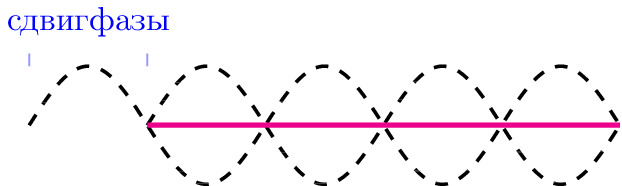

pre.tex
\documentclass[tikz]{standalone}\input{pre.tex}\begin{document}\begin{tikzpicture}
\xdef\darkness{0}
\xdef\opa{0.2}
\xdef\SIZE{6}
\xdef\setka{0}
\input{setka}
\draw[
domain=0:5*pi,
smooth,thick,
variable=\x,
samples=100,
black,
dashed,
] plot ({\x/pi},{sin(\x r)/2});
% \draw[
% domain=0:5*pi,
% smooth,thick,
% variable=\x,
% samples=100,
% magenta,
% % yshift=3cm
% ] plot ({\x/pi},{sin((\x) r)});
\draw[
domain=pi:5*pi,
smooth,thick,
variable=\x,
samples=100,
black,
dashed,
% yshift=3cm
] plot ({\x/pi},{-sin((\x) r)/2});
\draw[magenta,very thick] (1,0)-- (5,0);
\begin{scope}[xshift=0cm, yshift=0.5cm]
\lineann[0.5]{0}{1}{сдвиг\\ фазы}{white}
\end{scope}
\end{tikzpicture}\end{document}